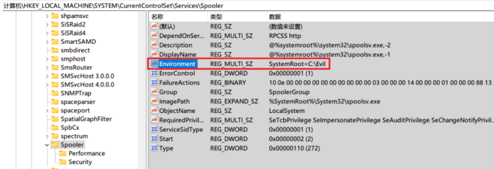
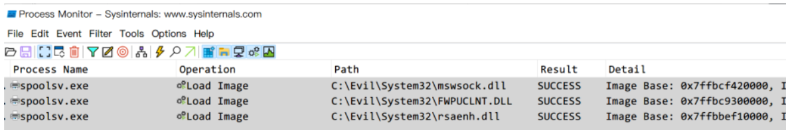
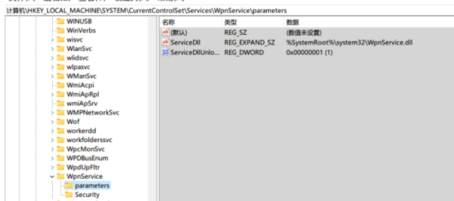
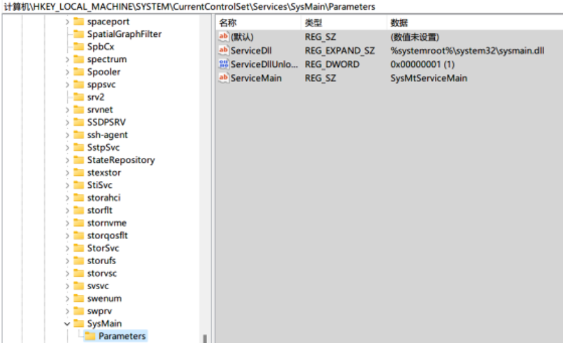

dll劫持
非常规劫持
用户环境变量:仅对当前用户有效，位于:HKEY_CURRENT_USER\Environment
系统环境变量:对所有用户均有效，位于:HKEY_LOCAL_MACHINE\SYSTEM\ControlSet001\Control\Session Manager\Environment
默认情况下，子进程继承其父进程的环境变量。命令处理器启动的程序继承命令处理器的环境变量。
1.劫持原理
程序可能会依赖Windows定义好的环境变量来确定某些文件的位置，尤其对于Windows内置程序来说大量依赖环境变量来寻找系统盘文件。正常来说”%SystemRoot%/System32/mswsock.dll“会被解析为”C:/Windows/System32/mswsock.dll“，但是这里面有一个不确定的因素就是”%SystemRoot%“，假设我们修改了环境变量”%SystemRoot%“的值为其他文件夹路径且在该路径下存放恶意Dll，那么程序就会加载我们设定的Dll，继而完成Dll劫持。
如果直接更改”%SystemRoot%”的值，会对整个操作系统上运行的程序产生影响，但是我们可以只修改指定进程的环境变量，如创建以下vbs脚本，利用子进程默认继承其父进程环境变量的特性，修改Windows内置进程hostname.exe的环境变量”SystemRoot”为”C:\Evil”。
1 | Set shell = WScript.CreateObject("WScript.Shell") |
2.持久化
完成持久化的关键就在于维持目标进程环境变量值的修改。
1.利用注册表修改Windows自启服务的环境变量
这里先引用下Wietze Beukema文章中提到的修改Windows打印机服务的环境变量，看是否会成功加载指定目录下的Dll文件。
- 首先将恶意Dll”mswsock.dll”放到指定目录”C:\Evil\System32”
- 在注册表spoolsv服务下创建”Environment”键值修改环境变量

- 重启spoolsv服务，用Procmon进行监控

可以看到使用上述方式修改Windows服务的环境变量确实能够加载我们指定目录下的Dll文件。但是需要注意的是，有时候为了保证被修改的服务能够正常运行，我们需要将受环境变量影响的Dll全部移动到我们指定的路径下。
实际上能够被利用的Windows服务远不止上面一个，通常来说服务对应一个PE文件，这里我们去看看Windows自带服务的PE文件路径是如何写的就明白了。

可以看到很多服务都依赖环境变量来寻找所对应的PE文件，这里我推荐修改的Windows自启服务是Windows推送通知系统服务(WpnService)，修改环境变量后只需移动一个受影响的Dll文件即可,不用管该服务是否能够正常运行。
2.常规持久化配合创建子进程
我们也可以使用常规持久化方案如创建计划任务或者写注册表来实现自启，然后程序自启后自修改自身环境变量值,最后创建受环境变量影响的Windows可信进程，利用Dll劫持来完成一次隐匿攻击行为。
接下来使用Win32 API来展示下如何修改子进程的环境变量。
- 子进程Child.exe代码如下:
1 | #include <windows.h> |
- 父进程Parent.exe代码如下:
1 | #include <stdio.h> |
- 运行Parent.exe进程即可
以上需要注意一点的就是，当Child.exe进程需要的权限比Parent.exe进程高时，Parent.exe创建Child.exe进程时会失败，当然也就无法谈起修改其环境变量值了
3.防范
- 程序代码使用GetWindowsDirectory代替环境变量”%SystemRoot%”，或者使用GetSystemDirectory直接拿系统盘System32路径
- 对系统Dll进行路径检测
- 对程序加载的Dll进行签名校验